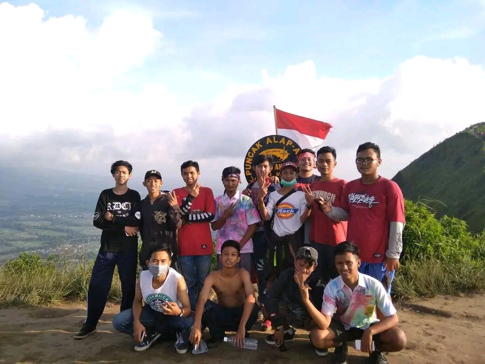

Puncak Andong - Memori 2018
Tahun 2018 di Gunung Andong adalah awal segalanya. Saat itu, saya berangkat dengan keterbatasan; semua barang yang saya pakai adalah hasil sewa. Dari carrier, hingga tenda yang harus dikembalikan tepat waktu.
Setelah sekian lama hobi ini tertidur, sekarang di tahun 2026, semangat itu muncul kembali. Namun kali ini berbeda. Saya tidak ingin lagi bergantung pada barang sewaan. Dengan budget yang sudah saya siapkan, saya memutuskan untuk memulai kembali dengan gear milik saya sendiri.
Tentu saja, menyewa peralatan bukanlah hal yang salah. Bagi mereka yang baru ingin mencoba atau sekadar melepas penat sesekali, menyewa adalah pilihan yang praktis dan ekonomis. Namun, bagi saya, keputusan untuk mulai mencicil dan membeli gear sendiri adalah tentang komitmen dan selera pribadi.
Pada akhirnya, setiap pendaki punya caranya masing-masing untuk menikmati alam. Apakah itu dengan barang sewa atau milik sendiri, yang terpenting adalah rasa syukur dan keselamatan selama di perjalanan.
Memiliki alat sendiri bukan cuma soal gaya, tapi soal kenyamanan dan ikatan emosional di setiap pendakian. Langkah pertama dimulai sekarang, dengan barang milik sendiri, di jalur yang baru.
Perjalanan ini tidak berhenti di sini. Saya akan terus memperbarui website ini seiring dengan pendakian-pendakian selanjutnya yang akan saya tempuh dengan perlengkapan baru saya. Jadi, pastikan untuk terus memantau halaman ini dan nantikan cerita-cerita baru dari langkah saya selanjutnya!